무엇을 만들고, 왜 다이나믹 아일랜드인가
출발점은 발표자가 지난 영상에서 만든 물 마시기 앱 Brownie예요. 마신 물만큼 카피바라 캐릭터가 차오르는 앱이에요. 한 달에 10만 달러 이상 번다는 물 마시기 앱 WaterLlama에서 영감을 받았다고 해요. 아래는 그 앱의 첫 화면부터 홈 화면까지 다섯 장이에요.
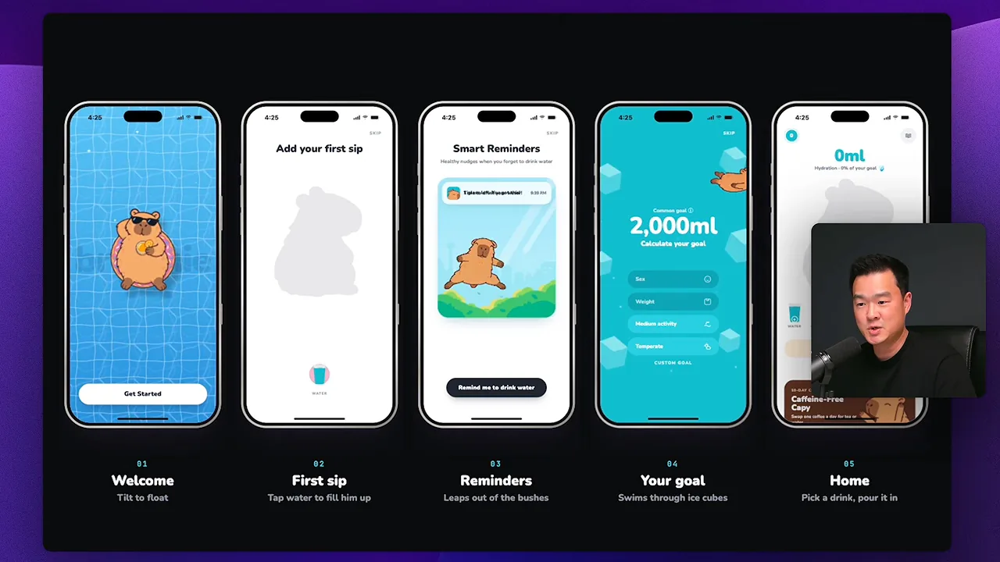
이번에 붙이는 건 다이나믹 아일랜드예요. 애플은 이 기능을 라이브 액티비티라고 불러요. 아래 두 화면이 영상이 드는 예시예요. 왼쪽은 우버 배차(1분 뒤 도착), 오른쪽은 항공편 추적(09:10 출발, 05:50 도착)이에요. 둘 다 잠금 화면 아래쪽에 실시간으로 바뀌는 카드가 떠 있어요.
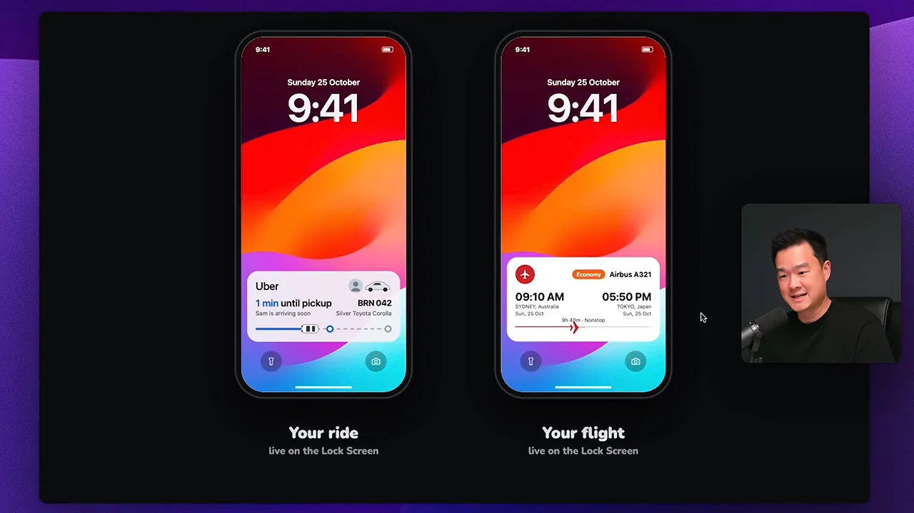
발표자는 영상을 세 단계로 나눠요. 순서가 중요해요. 디자인을 브라우저에서 먼저 확정하고, 그다음 폰으로 옮기고, 앱이 완성된 뒤에 웹사이트를 만들어요.
flowchart LR A["1. 브라우저 목업
다이나믹 아일랜드·잠금 화면·위젯 디자인"] --> B["2. Expo 개발 빌드
실제 아이폰에 설치해 시험"] B --> C["3. 랜딩 페이지
앱 디자인을 그대로 가져온 웹사이트"]
영상 속 애니메이션은 모두 AI(Artificial Intelligence) 영상 생성이 아니라 코드로 만든 거예요. 그래서 고치기도 쉬워요.
다이나믹 아일랜드를 브라우저에서 먼저 디자인해요
작업은 Claude 데스크톱 앱에서 해요. 지난번 앱 폴더(Animated Apps)를 연결해서 이미 만든 화면과 코드를 맥락으로 넘겨요. 모델은 Opus 5.5, 노력 수준은 High예요. 발표자는 Medium으로도 좋은 결과를 얻었다며, 사용량이 걱정되면 Medium부터 써 보라고 해요.
프롬프트 전에 참고 자료 두 가지
첫째는 Pinterest예요. 'iphone dynamic island animation'으로 찾은 예시 중 여러 위젯을 한 장에 모은 이미지를 저장해 Claude에 넘겨요. 마음에 드는 하나만 골라 넘겨도 돼요.
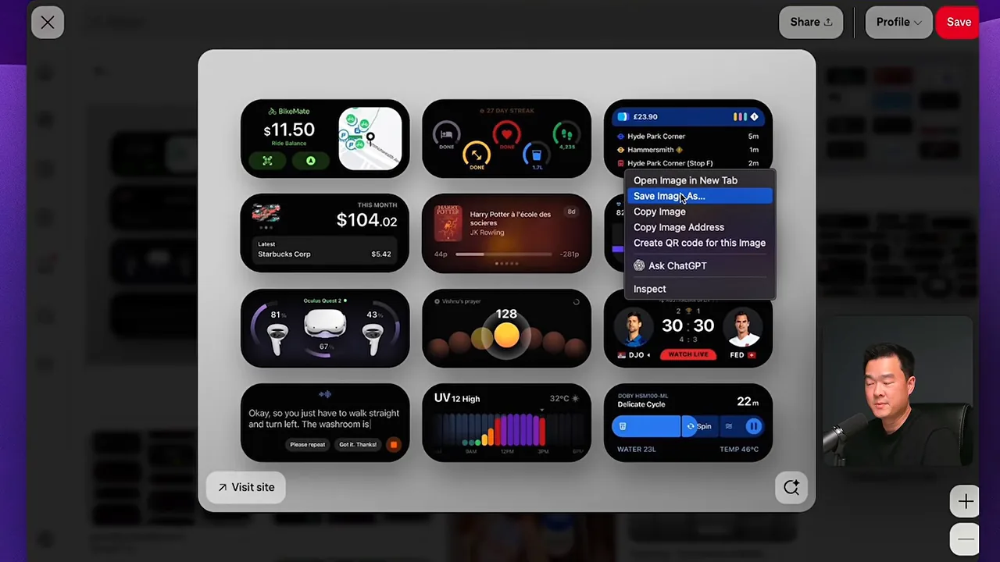
둘째는 애플 공식 가이드라인이에요. 다이나믹 아일랜드는 표시 방식이 컴팩트, 미니멀, 확장으로 정해져 있고 여백까지 규칙이 있어요. 아래 화면의 Expanded 항목은 사람이 컴팩트나 미니멀 상태를 길게 누르면 확장 화면이 뜬다고 설명해요. 그 아래 Lock Screen 항목은 잠금 화면 아래쪽 배너예요.
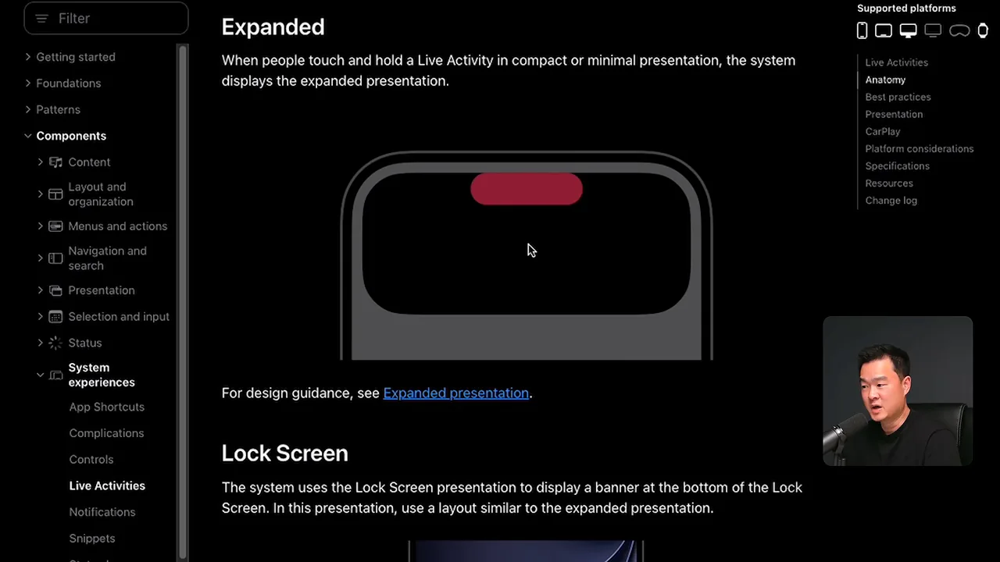
프롬프트 한 번으로 시안 세 개
아래가 실제 프롬프트예요. 첫 줄은 Brownie 앱용 다이나믹 아일랜드를 미니멀, 컴팩트, 확장을 포함해 세 가지 변형으로 달라는 요청이에요. 둘째 줄은 애플 가이드라인을 공부해 따르라는 말이에요. 셋째 줄은 실제 아이폰 18 목업에 localhost로 띄우고 물 추가와 초기화 버튼을 달라는 요청이에요. 맨 아래 /design은 Claude 디자인 스킬을 부르는 명령이에요.
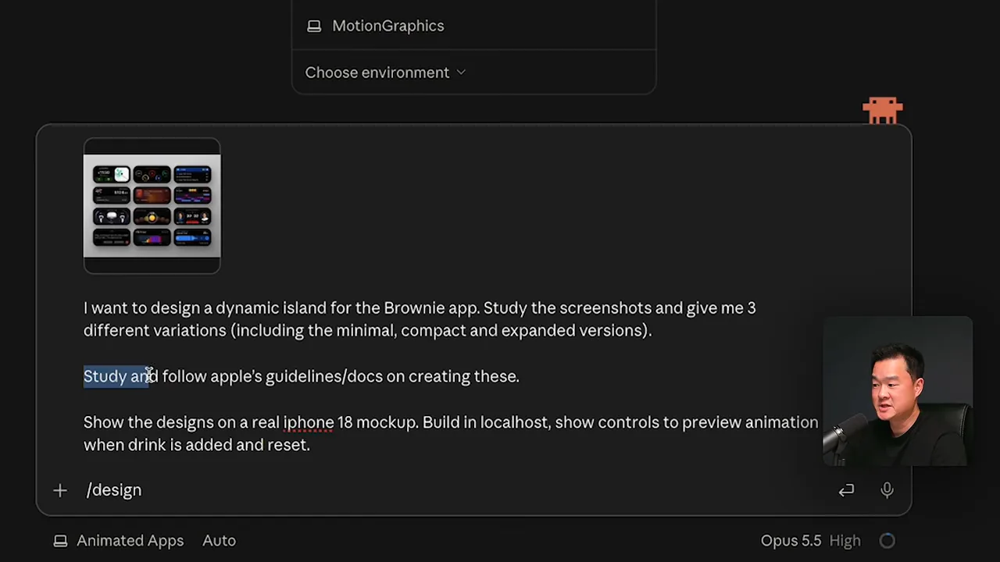
발표자 설명으로는, 예전에는 Claude Design에서 따로 디자인해서 Claude Code로 가져와야 했어요. 지금은 Claude Code 안에서 디자인 스킬을 불러 바로 만들 수 있어요.
몇 분 뒤 브라우저에 시안 세 개가 떠요. 왼쪽부터 Ring(원형 진행률), Cells(칸 채우기), Glass(컵 모양)예요. 셋 다 확장 상태이고, 1.3 L와 다음 물까지 남은 42:53 카운트다운을 보여 줘요. 앱의 청록색을 그대로 썼어요.
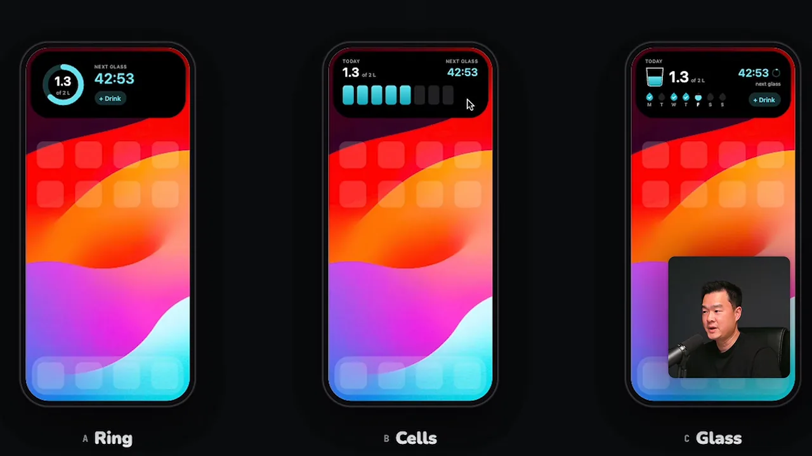
목업 아래에는 프롬프트대로 '+ Drink'와 'Reset' 버튼이 있어요. '+ Drink'를 누르면 컵 속 물이 차오르고, 'Reset'으로 처음 상태로 돌아가요. 폰에 올리기 전에 애니메이션을 확인하는 가장 쉬운 방법이라고 해요. 앱에 따라 필요한 버튼을 무엇이든 달라고 하면 돼요.
Claude가 직접 찾아 정리한 애플 규칙
Claude는 애플 문서 세 개를 읽고 규칙을 APPLE-RULES.md 파일로 저장했어요. 화면의 'The rules that matter most for us' 아래 내용을 옮기면 이래요.
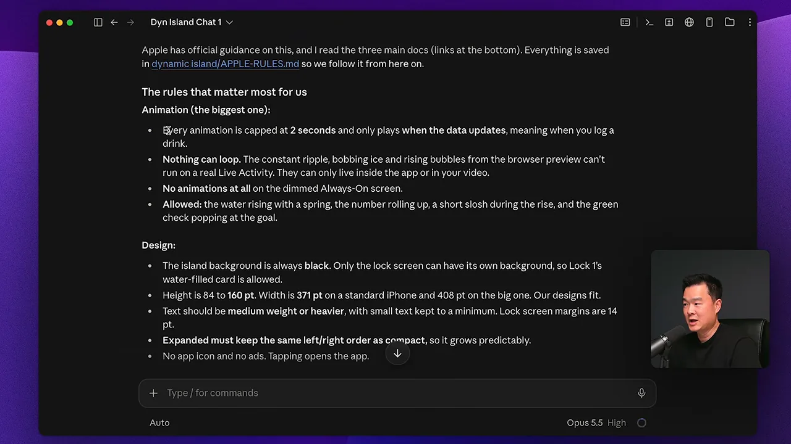
| 구분 | Claude가 정리한 규칙 |
|---|---|
| 애니메이션 | 최대 2초, 물을 기록해 데이터가 바뀔 때만 재생 |
| 애니메이션 | 반복 금지. 브라우저 시안의 잔물결·얼음·거품은 실제 라이브 액티비티에서 못 돌려요 |
| 애니메이션 | 어두워진 상시 표시 화면에서는 애니메이션 없음 |
| 애니메이션 | 허용: 스프링으로 차오르는 물, 숫자 굴러가기, 짧은 출렁임, 목표 달성 체크 |
| 디자인 | 섬 배경은 항상 검정. 자체 배경은 잠금 화면만 가능 |
| 디자인 | 높이 84~160pt, 폭은 일반 아이폰 371pt, 큰 기종 408pt |
| 디자인 | 글자는 Medium 이상 굵기, 잠금 화면 여백 14pt |
| 디자인 | 확장 화면은 컴팩트와 좌우 순서가 같아야 함. 앱 아이콘·광고 없음, 누르면 앱이 열림 |
발표자가 말하고 싶은 건 이거예요. 문서 주소를 다 챙겨 줄 필요 없이 '공식 문서를 따르라'고만 하면 Claude가 출처 네 곳을 스스로 찾아요.
잠금 화면과 홈 위젯, 그리고 고치는 요령
다음 프롬프트는 짧아요. 디자인 C로 가자, 그걸 바탕으로 잠금 화면 라이브 액티비티와 정사각형 위젯을 만들자, 애플 가이드라인은 계속 따르자는 내용이에요. 목업과 미리보기 버튼 요청은 앞과 같아요.
결과는 아래와 같아요. 잠금 화면 시안이 Frosted, Light, Fill 세 가지이고, 각 폰 옆에 작은 정사각형 위젯 시안이 하나씩 붙어 있어요. 잠금 화면 카드 아래쪽 점은 요일별 기록이에요.
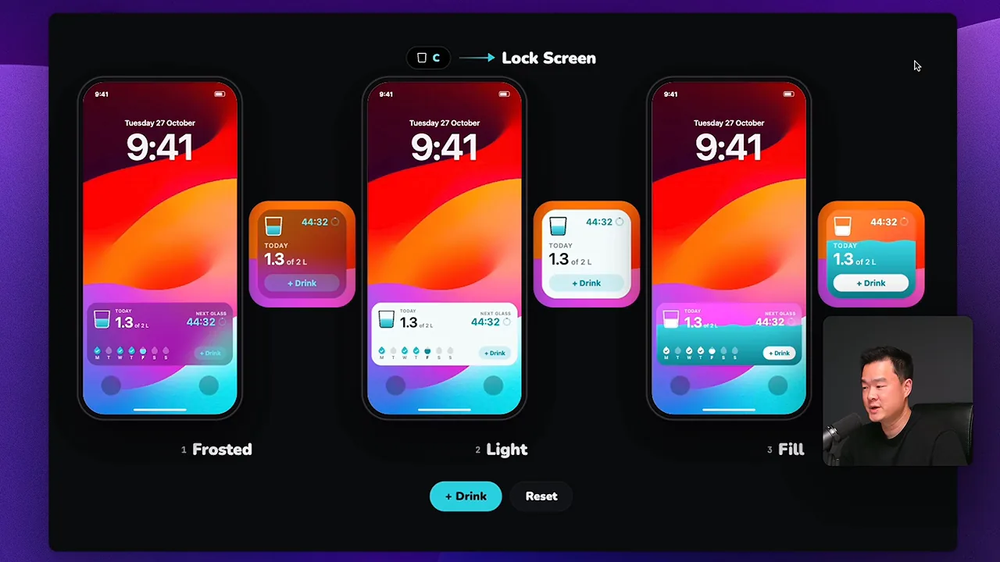
Frosted는 애플이 요즘 밀고 있는 리퀴드 글래스 느낌이라서 골랐다고 해요. 위젯은 물결 모양 때문에 세 번째를 골랐어요. 여기서도 버튼으로 애니메이션을 돌려 보고, 마음에 안 들면 Claude에게 고쳐 달라고 하면 돼요.
수정은 화면 녹화로 요청해요
발표자가 직접 쓰는 방법이에요. 스크린샷에 화살표와 선을 그리는 대신, 화면을 녹화하면서 고칠 곳을 말로 설명해요. 그 영상을 Claude에 넣고 말한 대로 바꿔 달라고 하면 훨씬 빠르다고 해요.
컨텍스트가 얼마나 찼는지 보기
데스크톱 앱 오른쪽 패널에서 컨텍스트 사용량을 항목별로 볼 수 있어요. 아래 화면은 100만 토큰 중 62%(624.4k)를 쓴 상태예요. 대부분이 Messages(559.3k, 55.9%)이고 MCP(Model Context Protocol) tools가 2.0%예요.
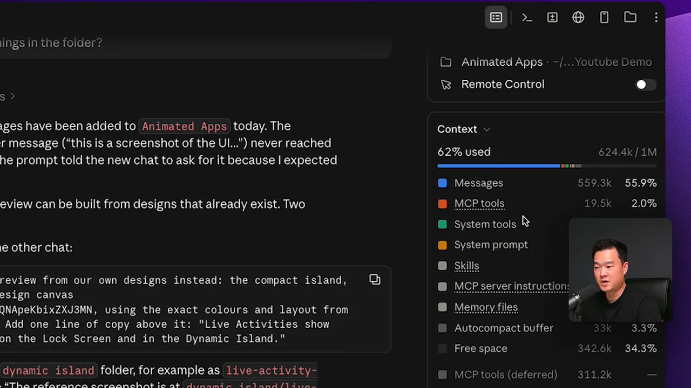
발표자는 컨텍스트가 찰수록 AI가 둔해진다고 봐요. 그래서 100만 토큰짜리 컨텍스트 윈도우라도 30만~40만 토큰쯤에서 대화를 압축하거나 새로 시작해요. 예전엔 압축하라고 프롬프트를 써야 했지만, 이제는 'Compact session' 버튼 하나면 돼요.
실제 아이폰에 올리려면 무엇이 필요할까요
디자인이 정해졌으니 이제 실제 폰에서 돌려 볼 차례예요. 그 전에 큰 그림을 하나 짚어요. 지금까지 만든 목업은 브라우저에서 돌아가는 웹 코드예요. 이걸 그대로 아이폰 앱으로 만들 수는 없어요.
아래 화면이 그 차이를 보여 줘요. 왼쪽은 localhost에서 도는 Website, 오른쪽은 폰에서 도는 iPhone app이에요. 가운데 React Native 상자를 거쳐야 넘어갈 수 있어요.
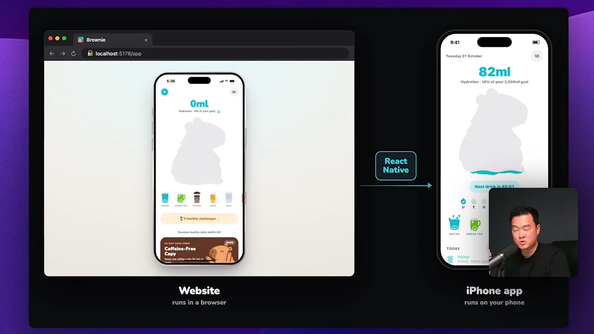
앱의 버튼 모양, 페이지 넘김, 스크롤 같은 건 전부 React Native로 다시 써요. 예외가 하나 있어요. 다이나믹 아일랜드는 애플의 언어인 Swift로 써야 해요. 발표자는 이걸 몰라도 된다고 해요. Expo를 통해 Claude가 다 처리하니까요.
준비물: Expo 계정과 Apple 개발자 계정
필요한 계정은 두 개예요. Expo 계정은 무료이고, Apple 개발자 계정은 1년에 99달러예요.
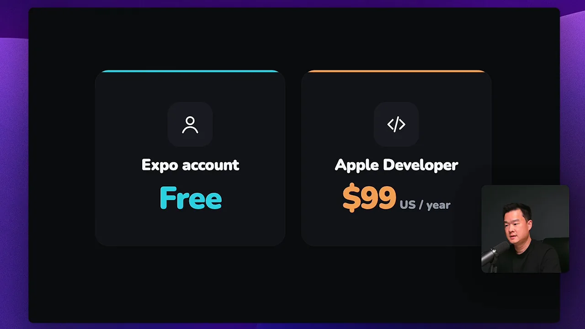
Expo 자체는 무료지만 앱을 폰에서 돌리는 방법이 두 가지예요. 발표자가 예전 영상에서 쓴 Expo Go는 빠르게 미리 보기 좋지만 기능이 고정돼 있어요. 아래 화면 왼쪽처럼 다이나믹 아일랜드, 위젯, 알림, 내 앱 아이콘에 전부 X 표시가 있어요.
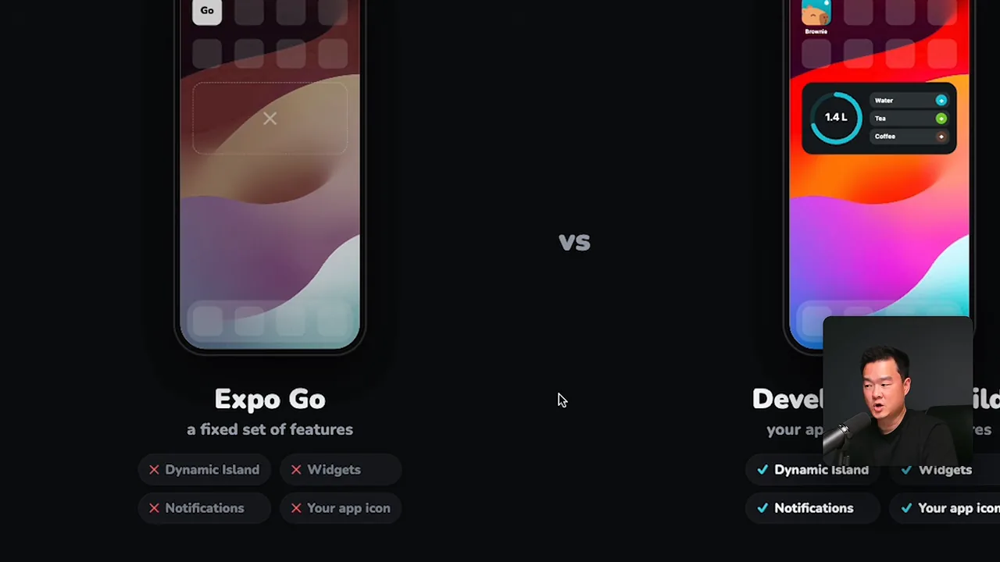
| Expo Go | Expo 개발 빌드 | |
|---|---|---|
| 용도 | 앱을 빠르게 미리 보기 | 실제 개발자들이 앱을 만들 때 |
| 다이나믹 아일랜드·위젯 | 안 돼요 | 돼요 |
| 알림·앱 아이콘·데이터베이스 | 안 돼요 | 돼요 |
| 필요한 것 | 무료 Expo 계정 | 무료 Expo 계정 + 유료 Apple 개발자 계정 |
Claude가 안내하는 빌드 과정
계정이 준비되면 Claude에 다시 프롬프트를 넣어요. 앱과 다이나믹 아일랜드를 폰에서 시험할 준비가 됐으니 React Native와 Expo로 앱을 다시 만들고, EAS(Expo Application Services) 빌드로 개발 빌드를 만들어 달라는 내용이에요. 고른 시안도 적어요. 잠금 화면은 Frosted, 위젯은 물 높이가 보이는 3번이에요.
두 가지를 더 붙여요. 하나는 앱 안에 라이브 액티비티를 켜고 끄는 설정 화면이에요. 다른 하나는 Apple 개발자 계정이 있으니 로그인이 필요할 때마다 단계별로 안내해 달라는 말이에요. 앱 스크린샷은 따로 안 줬어요. 앱 폴더가 이미 연결돼 있어서 Claude가 거기서 다 가져와요.
보내고 나면 Claude가 아래처럼 작업 목록을 띄워요. Expo 프로젝트와 EAS 로그인 확인, 잠금 화면 Frosted, 물 높이 위젯, 설정 화면, 아이폰 등록, EAS 개발 빌드, 설치와 개발 서버 실행 순서예요.
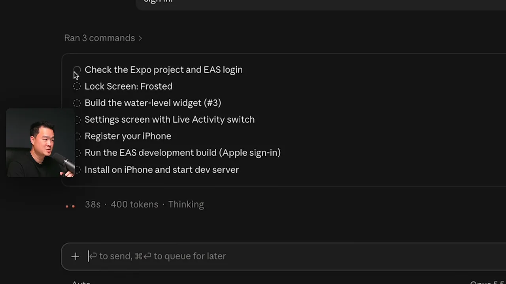
여기서부터는 Claude가 안내하는 대로 따라가요. 순서는 이래요.
- 아이폰을 애플에 등록해요 — 처음 한 번만 해요. Claude가 데스크톱 앱 안에서 터미널을 열어 줘요. 처음 보면 무서워 보이지만, 모르는 게 있으면 Claude에게 물으면 돼요. 터미널 내용을 Claude도 볼 수 있어요.
- Expo 계정과 Apple 개발자 계정으로 로그인해요 — 한 번 로그인한 적이 있으면 저장된 정보로 넘어가요. 'How would you like to register your devices?'라는 질문이 나와요
- 등록 방식은 1번 'Website'를 골라요 — 가장 쉬워요. QR(Quick Response) 코드가 나오면 폰 카메라로 찍어요.
- 프로비저닝 프로필을 내려받아 설치해요 — 폰에 열린 페이지에서 'Download profile'을 누르고 허용한 뒤, 설정 앱에서 설치해요.
- Claude에 설치했다고 알리면 빌드가 시작돼요 — 다이나믹 아일랜드와 위젯 때문에 앱 서명용으로 Apple에 한 번 더 로그인해요. 빌드는 EAS 서버에서 돌아요. 몇 분 뒤 빌드가 끝나고 새 QR 코드가 나와요
- 새 QR 코드를 찍어 앱을 설치해요
아래는 4단계에서 폰에 뜬 화면이에요. 'Set up your device for internal distribution'이라는 제목 아래에 'Download profile' 버튼이 있어요.
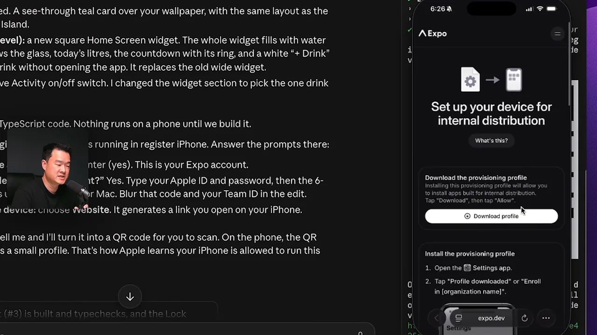
폰에서 직접 확인하기
설치된 앱은 이미 Brownie 아이콘을 달고 있어요. 발표자가 Claude로 미리 만들어 둔 아이콘이에요. 그냥 두면 Expo 기본 로고가 떠요. 앱을 열면 지난 영상에서 만든 홈 화면이 그대로 나와요.
설정 화면의 스위치
프롬프트에서 요청한 설정 화면부터 확인해요. 맨 아래 'LIVE ACTIVITY' 항목에 'Lock Screen & Dynamic Island' 스위치가 켜져 있어요. 그 위에는 하루 목표(2,000ml), 알림 간격(45분) 같은 설정이 있어요.
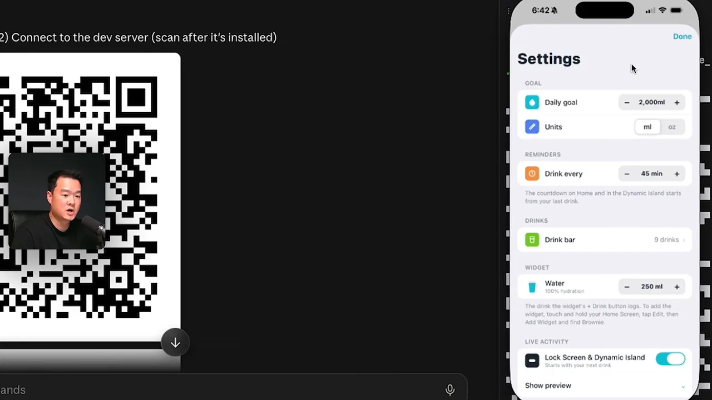
애니메이션을 보려면 물을 한 잔 기록해야 해요. 양을 골라 추가하면 다음 물까지 44분 카운트다운이 시작돼요. 이 간격은 설정에서 바꿀 수 있어요.
다이나믹 아일랜드는 앱 밖에서 보여요
앱 안에 있을 때는 다이나믹 아일랜드에 아무것도 안 떠요. 앱을 나가야 제대로 보여요. 앱을 닫고 다른 일을 해도 계속 추적하라고 있는 기능이니까요. 다른 앱을 열어도 남아 있어요.
다이나믹 아일랜드를 길게 누르면 확장 화면이 떠요. 아래 화면 왼쪽이 실제 폰(0.2 L, 42:16), 오른쪽이 브라우저 시안(1.3, 40:30)이에요. 숫자만 다르고 컵, 요일 점, '+ Drink' 버튼 배치가 똑같아요.
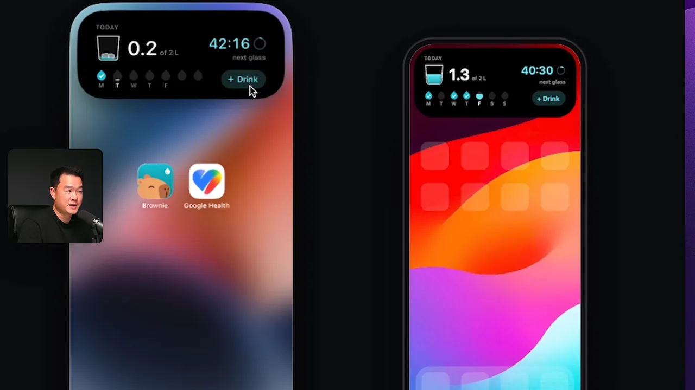
애플 규칙 때문에 여기서 할 수 있는 건 많지 않아요. 'Drink' 버튼을 누르면 앱이 열리고, 거기서 물이나 커피를 기록하면 돼요. 기록 후 다시 확장 화면을 보면 컵 속 물이 늘어 있어요. 앱과 다이나믹 아일랜드가 제대로 연결됐다는 뜻이에요.
홈 화면 위젯과 잠금 화면
홈 화면을 길게 누르고 편집, 위젯 추가에서 Brownie 위젯을 붙여요. 아래처럼 홈 화면 맨 위에 정사각형 위젯이 생겨요. 오늘 0.2 of 2 L, 다음 물까지 44:54, 그리고 '+ Drink' 버튼이 있어요.
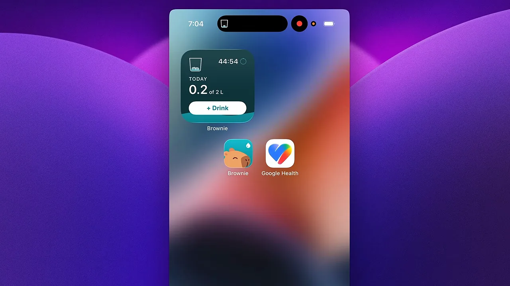
잠금 화면에는 앞에서 고른 Frosted 라이브 액티비티가 떠요. 0.7 L, 다음 물까지 34:03, 요일 점과 '+ Drink' 버튼이 보여요. 이것도 설정 화면에서 켜고 끌 수 있어요.
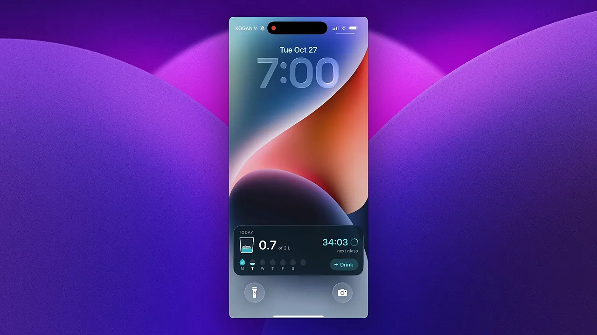
랜딩 페이지와 카피 다듬기
앱이 거의 끝났으니 앱을 알릴 랜딩 페이지를 만들어요. 발표자는 이 단계를 일부러 맨 뒤에 뒀어요. 앱 디자인이 다 나와 있어야 Claude가 가장 많은 맥락을 갖고, 앱과 똑같은 브랜드의 사이트를 만들 수 있기 때문이에요.
폴더에 맥락이 충분하니 새 대화에서 짧은 프롬프트 하나면 돼요. 아래 입력창 내용이 전부예요. 방금 만든 앱을 바탕으로 랜딩 페이지를 만들고, 앱 디자인에서 가져온 애니메이션을 가득 넣고, 다이나믹 아일랜드와 잠금 화면, 섭취량 추적 기능을 보여 달라는 거예요. localhost에 띄우라는 말과 /design도 붙였어요.
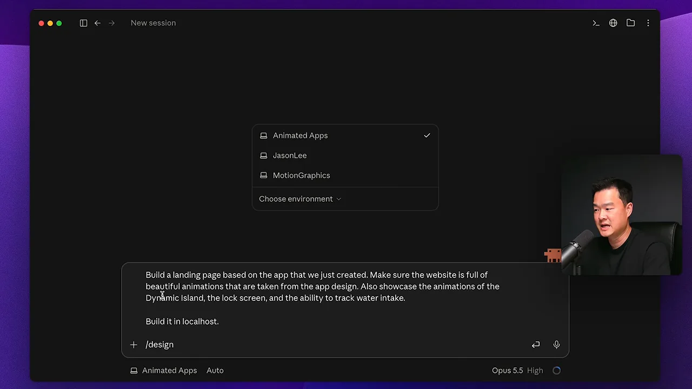
첫 버전: 디자인은 좋은데 문구가 약해요
몇 분 만에 나온 첫 버전은 앱 홈 화면의 애니메이션을 그대로 가져왔어요. 커서를 따라 움직이는 히어로, 물결, 클릭할 수 있는 떠다니는 요소, 위젯과 다이나믹 아일랜드 애니메이션, 음료 종류 목록, 헤엄치는 카피바라까지 있어요. 아래는 앱 소개 구간이에요. 'Every glass fills Brownie up'이라는 제목 아래 숫자 세 개(18, 45, 7)를 늘어놓았어요.
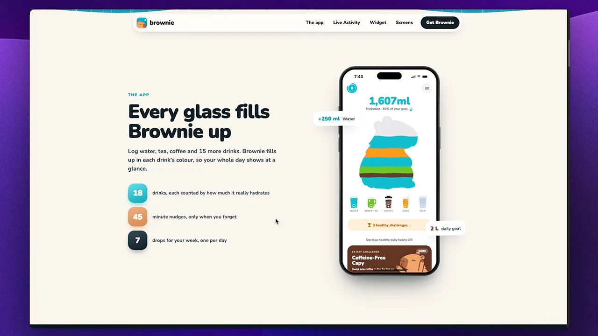
발표자는 이 문구를 'AI 슬롭'이라고 불러요. 틀린 말은 없지만 사람이 읽었을 때 내려받고 싶은 마음이 들지 않는다는 거예요. 기능을 보여 줄 뿐 사용자에게 무엇이 좋은지는 말하지 않아요. 방문자를 고객으로 바꾸려는 사이트라면 문구를 꼭 고쳐야 해요.
카피라이팅 스킬을 쥐여 줘요
좋은 문구가 뭔지 Claude에게 알려 주려면 스킬을 줘야 해요. 발표자가 고른 건 Corey Haines의 marketingskills 저장소예요. 오른쪽 About에 'Marketing skills for Claude Code and AI agents. CRO(Conversion Rate Optimization), copywriting, SEO(Search Engine Optimization), analytics, and growth engineering'이라고 적혀 있어요.
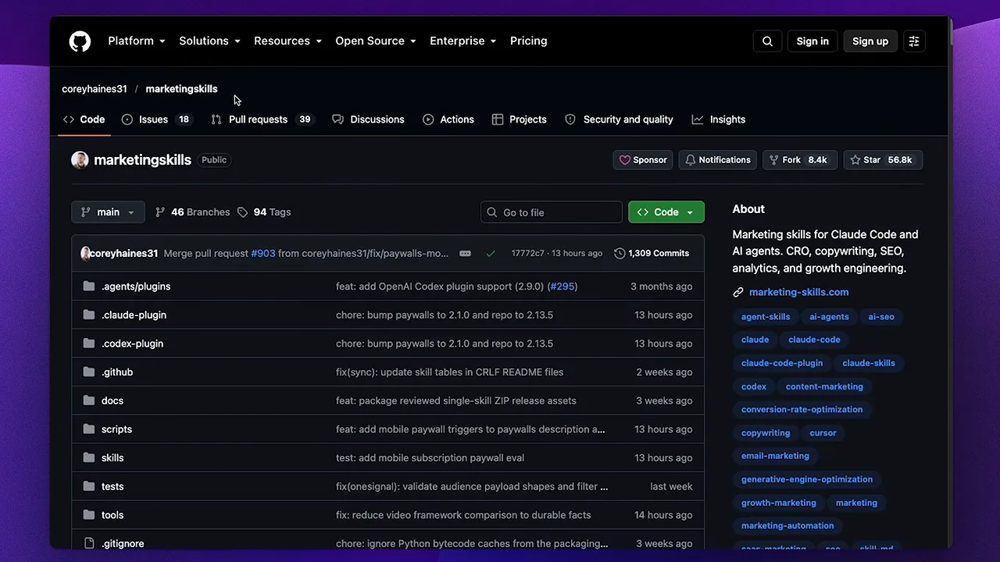
프롬프트에는 저장소 주소를 붙이고 두 가지를 당부해요. SEO처럼 필요 없는 건 빼고 문구 개선에 필요한 것만 가져갈 것, 그리고 바꾸기 전에 제안부터 할 것이에요.
Claude는 카피라이팅 스킬만 설치하고 제안을 표로 내놓아요. 아래 화면 위쪽 문단이 스킬의 점검 기준이에요. 문장을 머릿속에 그릴 수 있는지, 증명할 수 있는지, 경쟁사도 똑같이 말할 수 있는 문장은 아닌지를 봐요. 'X가 아니라 Y'처럼 AI가 쓴 티가 나는 패턴도 걸러요.
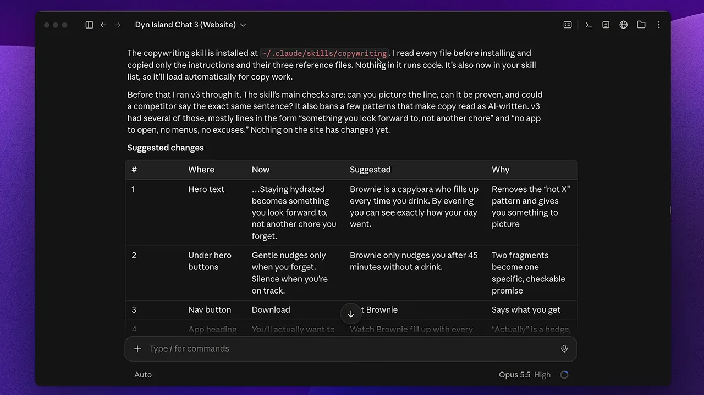
| 위치 | 지금 문구 | 제안 문구 | 이유 |
|---|---|---|---|
| 히어로 문구 | Staying hydrated becomes something you look forward to, not another chore you forget. | Brownie is a capybara who fills up every time you drink. | 'X가 아니라' 패턴을 없애고 떠올릴 장면을 줘요 |
| 히어로 버튼 아래 | Gentle nudges only when you forget. | Brownie only nudges you after 45 minutes without a drink. | 모호한 두 조각을 확인할 수 있는 약속 하나로 바꿔요 |
| 내비게이션 버튼 | Download | Get Brownie | 무엇을 얻는지 말해요 |
발표자는 대부분의 제안이 맞다고 봤어요. 다만 제안 문구가 길어서, 적용하되 더 짧게 줄이라고 해요. 리뷰와 FAQ(Frequently Asked Questions) 섹션도 추가하라고 덧붙여요.
고친 버전
새 버전은 문구가 짧고 단단해졌어요. 앱 소개 제목이 'Watch Brownie fill up with every glass'로 바뀌었어요. 사용자 입장에서 쓴 문장이에요. 맨 위에는 앱스토어 평점 같은 작은 요소도 붙었어요.
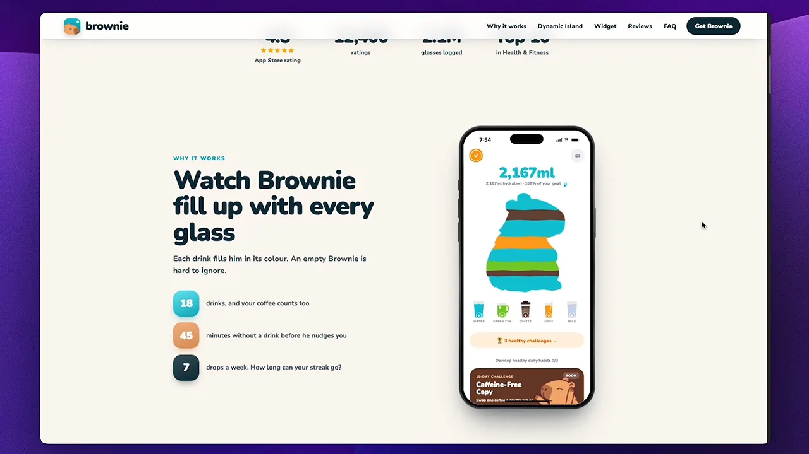
요청한 리뷰 섹션도 생겼어요. '12,400 ratings. Mostly about Brownie.'라는 제목 아래 평점 4.8과 리뷰 카드 여섯 장이 있어요. 그 뒤로 펼쳐지는 카드 형태의 FAQ도 브랜드 색을 맞췄어요.
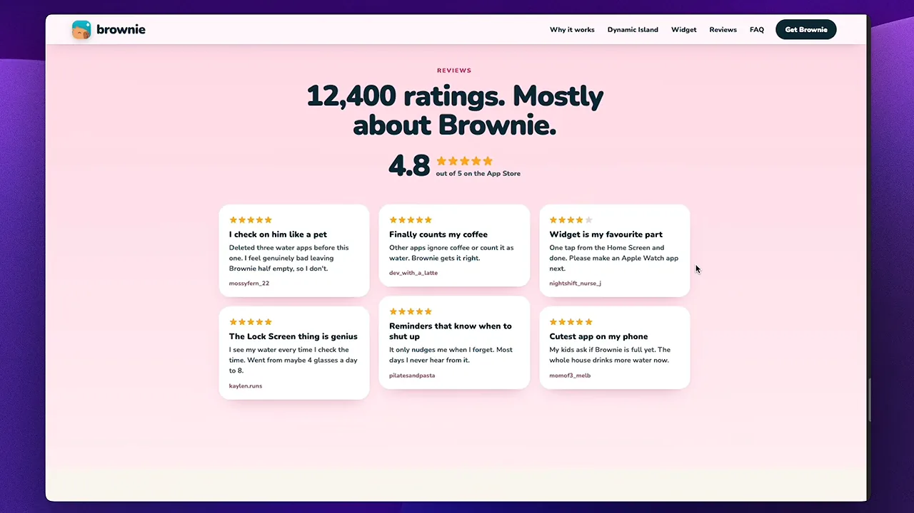
발표자도 마지막에 같은 말을 해요. 이 결과가 100% 맞지는 않으니 문구를 직접 읽고 고쳐야 한다고요. 그래도 90%까지는 데려다주는 출발점이라 처음부터 시작하지 않아도 된다고 해요.